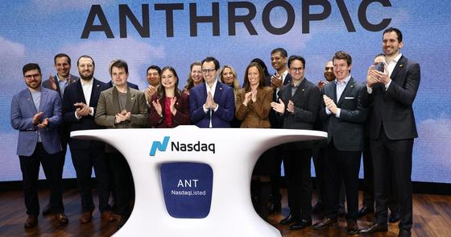
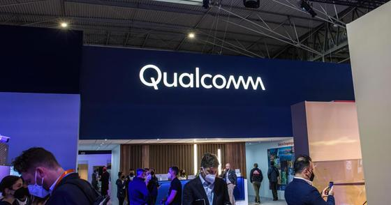
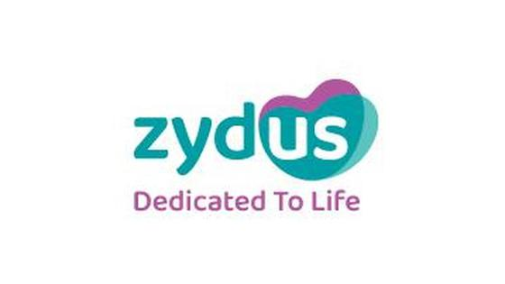
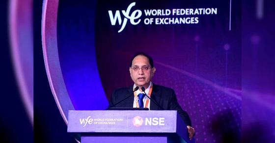

Executive Synthesis: Wall Street volatility spikes to 28.44 as AI infrastructure unwinds, even as Anthropic completes a record IPO, foreign capital floods Dalal Street, and agent engineering shifts toward verifiable harnesses.
Markets and Money
A sharp split across markets: the S&P 500 fell 2.02% as the VIX surged to 28.44 and Nvidia's post-Huang slide deepened, while Dalal Street rallied 990 Sensex points on November 19 as monthly FII inflows crossed ₹1.01 lakh crore.
US markets
| The Motley Fool: | today · 4m |
 Wall Street Suffers Sixth Straight Drop as S&P 500 Slides 2.02% and Dow Loses 1,100 Points
—
US equities extended their losing streak to six consecutive sessions on Thursday, November 19, confirming a broad Downtrend with eight distribution days over the past 25 sessions. The Dow Jones Industrial Average dropped 2.19% (over 1,100 points) to 49,097.06, the S&P 500 fell 2.02% to 7,175.83 (-5.49% 1W), and the Nasdaq-100 slid 2.21% to 26,517.05, while the Russell 2000 fell 2.18% to 2,655.11. Selling broadened beyond tech as Industrials fell 2.61% and AMD dropped 7.72%, while defensive Consumer Staples (+0.04%) and Energy (+0.14%) held near flat despite the 10-year Treasury yield easing slightly to 5.07%.
Wall Street Suffers Sixth Straight Drop as S&P 500 Slides 2.02% and Dow Loses 1,100 Points
—
US equities extended their losing streak to six consecutive sessions on Thursday, November 19, confirming a broad Downtrend with eight distribution days over the past 25 sessions. The Dow Jones Industrial Average dropped 2.19% (over 1,100 points) to 49,097.06, the S&P 500 fell 2.02% to 7,175.83 (-5.49% 1W), and the Nasdaq-100 slid 2.21% to 26,517.05, while the Russell 2000 fell 2.18% to 2,655.11. Selling broadened beyond tech as Industrials fell 2.61% and AMD dropped 7.72%, while defensive Consumer Staples (+0.04%) and Energy (+0.14%) held near flat despite the 10-year Treasury yield easing slightly to 5.07%.
Takeaway: Your US portfolio runs a 2.44 weighted beta across eight lockstep AI-beta positions (34.3% of net worth) inside a Stage 1/Stage 4 tape where only 41.7% of stocks remain above 50-day support.
| CBS News: | today · 4m |

Anthropic Completes Largest IPO in History, Closing Up 17% Amid Tech Selloff — AI developer Anthropic completed the largest initial public offering in history on Thursday, November 19, debuting on the Nasdaq under ticker ANT. Shares opened at $111.50, up 34% from their $83.00 offer price, and peaked at $114.99—implying a valuation above $2 trillion—before paring gains in the afternoon selloff to close at $97.17 (+17%). While the landmark listing drew intense institutional capital and validated frontier-model demand, it failed to arrest a 2.3% Nasdaq drop as investors rotated out of legacy software and scrutinized capital intensity across hyperscalers and AI infrastructure.
Takeaway: Anthropic's debut directly tests capital rotation across your Microsoft, Alphabet, TSMC, and DigitalOcean holdings as well as your Adobe LEAPS exposure.
| 24/7 Wall St.: | today · 4m |
 VIX Surges to 28.44 as Repeated Volatility Snapbacks Keep Options Hedging Expensive
—
Wall Street's volatility regime has turned erratic in November, with the Cboe Volatility Index (VIX) swinging from 16.61 on November 4 to 28.18 on November 5, easing back to 17.49 by November 11, then climbing to 25.46 on November 17 and 24.56 on November 18 before surging 15.80% on Thursday, November 19 to 28.44 (+52.09% 1W). Elevated 10-year Treasury yields (moving from 4.84% to 5.15% earlier in the month and holding near 5.07%) have kept index option implied volatility and downside protection demand firm across the 20–30 uncertainty band.
VIX Surges to 28.44 as Repeated Volatility Snapbacks Keep Options Hedging Expensive
—
Wall Street's volatility regime has turned erratic in November, with the Cboe Volatility Index (VIX) swinging from 16.61 on November 4 to 28.18 on November 5, easing back to 17.49 by November 11, then climbing to 25.46 on November 17 and 24.56 on November 18 before surging 15.80% on Thursday, November 19 to 28.44 (+52.09% 1W). Elevated 10-year Treasury yields (moving from 4.84% to 5.15% earlier in the month and holding near 5.07%) have kept index option implied volatility and downside protection demand firm across the 20–30 uncertainty band.
Takeaway: Tracking VIX above 28 alongside your UBER and ADBE LEAPS and 2.44 portfolio beta helps gauge whether hedging costs and Stage 4 markdown risk warrant trimming exposure.
| Quartz: | today · 3m |
Nvidia Six-Day Wipeout Tops $600 Billion as Post-Huang Uncertainty Overwhelms Q3 Beat
—
Nvidia (NVDA) extended its losing streak to six trading sessions on Thursday, November 19, closing down 3.30% at $145.98 after erasing more than $611 billion in market capitalization across a roughly 14.5% to 16% six-day slide. Although shares opened higher on Anthropic IPO enthusiasm and followed Tuesday's $115.8 billion Q3 revenue beat (+103% YoY) and $130.0 billion Q4 guidance (excluding China data center compute), sentiment stayed pressured by CEO Jensen Huang's November 12 resignation, the ongoing search under interim CEO Colette Kress, and Moody's shift of Nvidia's outlook from positive to stable.
Takeaway: Shortlist candidate NVDA closed at $145.98 below its $148–$156 entry zone toward its $139 stop, dragging lockstep holdings TSM (-2.90%), VRT (-4.88%), and ASX (-6.24%).
| MLQ.ai: | yesterday · 3m |
Federal Judge Bars Adobe From Using 'Foundry' Name on Firefly AI Model Service
—
U.S. District Judge Noël Wise in Northern California granted a preliminary injunction barring Adobe (ADBE) from using any mark containing 'Foundry' for its enterprise Firefly Foundry generative AI service while a trademark lawsuit by Roper Technologies subsidiary The Foundry Visionmongers proceeds. The court found six of eight likelihood-of-confusion factors favored Foundry on a reverse-confusion theory and ordered both sides to confer within 10 days on a rebranding timeline. The legal setback compounds Citigroup's Sell downgrade ($207 target) and pre-IPO software rotation ahead of Adobe's December 9 earnings report.
Takeaway: Your ADBE June 2027 $350 LEAPS are on WATCH / TIME STOP AUDIT with the underlying at $221.68, far below the $335 support and $320 stop anchors.
| The Motley Fool: | 2 days ago · 5m |
Nike Slides Toward Support as Turnaround Plan Delays Sales Growth Until Fiscal 2029
—
Nike (NKE) shares fell another 5.45% on Thursday, November 19 to $34.33 (-9.08% 1W), leaving the stock in Stage 4 Markdown just 0.8% above $34.06 technical support after CEO Elliott Hill's first Investor Day in nine years. While management's 'Full Stride Ahead' framework targets 12%–14% operating margins, $3.00–$3.50 adjusted EPS, and $2.5 billion in Pace cost savings by 2031 (at $1.3 billion in restructuring charges), Nike warned revenue will fall high-single-digits this fiscal year, decline further in FY2028, and not return to top-line growth until fiscal 2029 amid its Greater China reset.
Takeaway: NKE is an active Robinhood holding testing critical $34.06 Stage 4 support after pushing revenue-growth recovery out to FY2029 while still trading near 30x current-year adjusted earnings.
| TradingView: | today · 3m |
Bloom Energy Upgraded to Outperform by BMO Capital Following Multiple Compression
—
BMO Capital upgraded Bloom Energy (BE) from Market Perform to Outperform on Thursday, November 19 following a non-deal roadshow with CFO Simon Edwards and IR VP Michael Tierney, while trimming its price target from $260 to $230 to reflect broader multiple compression across AI power-infrastructure names. Analysts cited stronger conviction in commercial traction, execution, and potential upside to 2027 consensus estimates. Although BE shares rallied up to 6% intraday, the stock faded with the afternoon market selloff to close down 1.68% at $168.11 (-16.75% 1W), holding Stage 1 Basing above $156.00 support.
Takeaway: BE is one of your larger combined holdings across Robinhood and Schwab, and the BMO upgrade frames valuation reset vs. execution risk above $156 support.
| Los Angeles Times: | yesterday · 3m |

Qualcomm Cuts Over 500 California Roles in Restructuring as Shares Buck Tech Drop — Qualcomm (QCOM) disclosed permanent California layoffs affecting 442 employees in San Diego and 75 employees in Santa Clara County, taking effect by January 12, according to state WARN filings reported this week. The reductions follow CEO Cristiano Amon's internal memo outlining a performance-focused workforce realignment as the chipmaker shifts competencies toward automotive, data center silicon, and edge AI. Against Thursday's broad semiconductor selloff, QCOM shares outperformed by rising 1.38% to $162.01 (-8.54% 1W), remaining in a Stage 1 base above $148.25 support.
Takeaway: QCOM is held across both your Robinhood and Schwab accounts, and its disciplined opex restructuring helped shares decouple from Thursday's semiconductor slump.
| TechCrunch: | today · 4m |
Uber Tests 'Uber Kids' Pilot With $7 Driver Bonus as Shares Hover on LEAPS Support
—
Uber Technologies (UBER) confirmed on Thursday, November 19 a limited 'Uber Kids' pilot in Austin, Nashville, and Madison allowing guardians to book rides for children aged 10 to 12 without an adult present, expanding beyond its teen product for ages 13–17. The service mandates PIN verification, encrypted live video streaming for parents, GPS anomaly monitoring, and a $7 per-trip driver pay bump ($20 bonus on a driver's first Uber Kids trip). Separately, Uber shares sit at $65.60, virtually on top of the $65.50 support anchor.
Takeaway: Your December 2027 UBER $110 and $100 LEAPS (393 DTE) are on REVIEW / HOLD with the underlying at $65.60 right above its $65.50 support and $63.00 stop.
India markets
| Rediff: | today · 4m |
 Sensex Jumps 990 Points and Nifty Reclaims 25,514 on Nov 19 Auto and Bank Rally
—
Rebounding sharply from Wednesday, November 18's pullback (when Nifty closed at 25,227.95, Sensex at 82,031.81, and India VIX at 15.57), Indian equities surged to nine-month highs on Thursday, November 19. The BSE Sensex jumped 989.94 points (+1.21%) to 83,021.75 and the NSE Nifty 50 climbed 286.35 points (+1.14%) to 25,514.30, with BSE advance-decline breadth at 2,410 gainers versus 1,982 decliners. BSE Auto jumped 3.98% led by Maruti Suzuki (+7.58%) and M&M (+4.78%) on softer industrial metals, while PSU Bank (+2.43%) and Capital Goods (+1.77%) rallied and IT stocks lagged.
Sensex Jumps 990 Points and Nifty Reclaims 25,514 on Nov 19 Auto and Bank Rally
—
Rebounding sharply from Wednesday, November 18's pullback (when Nifty closed at 25,227.95, Sensex at 82,031.81, and India VIX at 15.57), Indian equities surged to nine-month highs on Thursday, November 19. The BSE Sensex jumped 989.94 points (+1.21%) to 83,021.75 and the NSE Nifty 50 climbed 286.35 points (+1.14%) to 25,514.30, with BSE advance-decline breadth at 2,410 gainers versus 1,982 decliners. BSE Auto jumped 3.98% led by Maruti Suzuki (+7.58%) and M&M (+4.78%) on softer industrial metals, while PSU Bank (+2.43%) and Capital Goods (+1.77%) rallied and IT stocks lagged.
Takeaway: Your India portfolio entered Thursday with a conservative 0.54 weighted beta and zero 0.60+ return-correlation overlap, benefiting from Thursday's breadth recovery into capital goods and autos.
| The Financial Express: | today · 4m |
FII Monthly Inflows Smash Record Above ₹1.01 Lakh Crore as Thursday Buying Hits ₹7,411 Crore
—
Foreign Institutional Investors (FIIs) logged net equity purchases of ₹7,411.41 crore on Thursday, November 19, extending their buying streak to 14 consecutive sessions and pushing cumulative November FII inflows past ₹1.01 lakh crore across 19 sessions—the largest single-month haul on record, eclipsing November 2020's ₹70,896 crore. Domestic Institutional Investors (DIIs) booked profits with ₹1,356.57 crore in net selling. Alongside softer copper, aluminium, and crude oil prices, foreign liquidity propelled Nifty Auto (+4.4%), Consumer Durables (+3.6%), PSU Bank (+2.3%), and Nifty Bank (+1.7%), while Nifty IT slipped roughly 1.1%.
Takeaway: Sustained record FII inflows offset domestic profit-taking and support your Uptrend India book even while US yields stay elevated above 5%.
| The Hindu: | today · 3m |
Cyient Semiconductors Lands $10M Strategic Equity Investment From GlobalFoundries at $510M Valuation
—
Cyient subsidiary Cyient Semiconductors announced on Thursday, November 19 that it has secured a $10 million strategic equity investment from foundry giant GlobalFoundries at a $490 million pre-money valuation—matching its recent Edelweiss-led round for a $510 million post-money valuation. Based in Hyderabad with design centers across India, Belgium, and the US, the unit will deploy the capital to expand turnkey custom ASIC engineering and lock in long-term wafer supply resilience across automotive, industrial, AI, communications, and data center customers. CYIENT closed Wednesday, November 18 at ₹1,086.40, 1.9% above ₹1,065.80 support.
Takeaway: CYIENT is an active Zerodha holding testing ₹1,065.80 support, and GlobalFoundries' equity backing validates its custom-silicon moat and wafer access.
| The Hindu: | 5 days ago · 3m |

Zydus Lifesciences UK LiqMeds Facility Receives Four USFDA Observations — Zydus Lifesciences (ZYDUSLIFE) disclosed in a SEBI Regulation 30 filing on November 14 that the USFDA concluded an inspection of its UK-based liquid-dose subsidiary LiqMeds—conducted from November 9 to November 13—with four observations. Zydus, which acquired LiqMeds in October 2023 to serve regulated US and UK markets, said it will work closely with the agency to address the findings expeditiously. The quality update lands alongside Moraiya's October Form 483s and ahead of the November 27 Saroglitazar PBC PDUFA date, with ZYDUSLIFE ending Wednesday, November 18 at ₹1,202.00.
Takeaway: Shortlist candidate ZYDUSLIFE (ACCUMULATE_ON_DIP, entry zone ₹1,156.84–₹1,189.47) faces another regulatory remediation item just ahead of its binary Nov 27 PDUFA catalyst.
| The Financial Express: | yesterday · 4m |
Titan Drops Into Shortlist Entry Zone on 14-Month Gold Low Ahead of Nov 24 Investor Meet
—
Titan Company (TITAN) led Nifty 50 decliners during Wednesday, November 18's session—closing down 5.30% at ₹4,648.10—as precious metals tumbled on hawkish US rate expectations pricing a 95.7% probability of a December Fed hike. COMEX gold fell 2.3% to $3,773.90/oz (a 14-month low), MCX gold dropped 2.4% to ₹131,040 per 10 grams, and COMEX silver slid 3.5% to $45.79/oz, dragging Kalyan Jewellers and Sky Gold down over 4% as well. The pullback brought Titan squarely inside its ₹4,550.00–₹4,696.38 technical entry zone ahead of its November 24 institutional investor meeting.
Takeaway: Shortlist candidate TITAN fell right into its ₹4,550–₹4,696.38 Stage 2 support band on bullion volatility while its full underwriting dossier remains pending.
| Raksha Anirveda: | yesterday · 4m |
Larsen & Toubro Advances Zorawar Light Tank to User Trials While Awaiting AMCA Bid Decision
—
Larsen & Toubro (LT) confirmed on November 18 that its 25-tonne Zorawar light tank, co-developed with DRDO, has finished developer trials across high-altitude and desert environments and is preparing for nine to 12 months of armed-forces user trials, targeting potential production by 2029 subject to evaluation. L&T also awaits a government selection decision within a month on its bid for India's fifth-generation AMCA fighter prototype programme. In the ledger as of Wednesday, November 18, LT closed at ₹4,159.00 above ₹3,980 support and its ₹3,920 stop.
Takeaway: Your active LT ₹4,100 Call expires November 26 (7 DTE), making near-term price defense above ₹3,980 support and defence order visibility directly actionable.
| Business Standard: | yesterday · 3m |

SEBI Weighs Free-Float Caps on Margin Trading Facility to Curb Leverage Concentration — SEBI Chairman Tuhin Kanta Pandey confirmed at the NSE–World Federation of Exchanges meeting in Mumbai on Wednesday, November 18 that the regulator is reviewing safeguards for the Margin Trading Facility (MTF), though no final decision has been taken. Among proposals under consideration are limits on fresh margin-funded stock positions where aggregate exposure crosses a free-float-linked threshold, balancing broker-funded retail leverage against market stability risks. Pandey also pushed back against extending India's 9:15 a.m.–3:30 p.m. equity trading hours, citing growing cyber risks and the lack of a clear business case.
Takeaway: Potential free-float caps on broker MTF leverage could cool momentum in crowded Indian mid- and small-cap stocks across your watchlist.
| Mint: | today · 3m |
Takeaway: Benchmarking RBI's IBJA bullion pricing against global gold softness adds macro context for domestic consumer and TITAN jewellery-demand exposure.
| ScanX: | today · 3m |
Afcom Holdings Schedules Nov 30 Virtual Investor Call Following 134% Q2 Profit Jump
—
Cargo carrier Afcom Holdings (AFCOM) filed a BSE disclosure under SEBI Regulation 30 on Thursday, November 19 scheduling a virtual group investor and analyst call for Monday, November 30 at 2:30 p.m. IST from Chennai. The outreach follows Q2 FY27 results showing revenue up 98% YoY to ₹240.23 crore and net profit up 134% YoY to ₹50.74 crore, alongside equity and Right-of-Use asset expansion from recent warrant conversions. Entering Thursday, AFCOM closed Wednesday, November 18 at ₹1,458.90 (+4.30% 1W), testing its rising 50-DMA support at ₹1,441.53.
Takeaway: AFCOM is a Zerodha holding testing 50-DMA support at ₹1,441.53, with the Nov 30 investor call offering a near-term catalyst on freighter utilization.